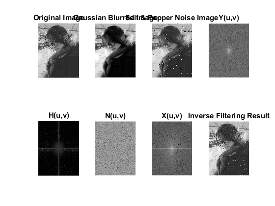
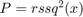
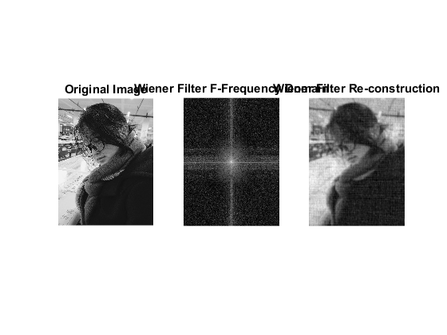

Contents
Initialization
close all clear clc im = imread('../data/jingjing.jpg'); imGray = rgb2gray(im); [rows, cols] = size(imGray);
Inverse Filtering
figure subplot(2,4,1) imshow(imGray) title('Original Image') % gaussian low-pass imBlurred = imgaussfilt(imGray, 2); subplot(2,4,2) imshow(imBlurred, []) title('Gaussian Blurred Image') imNoise = imnoise(imBlurred, 'salt & pepper', 0.02); subplot(2,4,3) imshow(imNoise, []) title('Salt & Pepper Noise Image') Y = fft2(imNoise); subplot(2,4,4) imshow(10.*log10(abs(fftshift(Y))+1), []) title('Y(u,v)') H = fft2(imBlurred)./fft2(imGray); subplot(2,4,5) imshow(10.*log10(abs(fftshift(H))+1), []) title('H(u,v)') N = fft2(imNoise - imBlurred); subplot(2,4,6) imshow(10.*log10(abs(fftshift(N))+1), []) title('N(u,v)') X = fft2(imGray); subplot(2,4,7) imshow(10.*log10(abs(fftshift(X))+1), []) title('X(u,v)') x = ifft2( X - N./(H+1) ); subplot(2,4,8) imshow(abs(x), []) title('Inverse Filtering Result')
Wiener Filtering
from snr funciton, we could know that  --------------------------------- % function re = signalPower(in) re = rssq(in(:))^2; end --------------------------------- %
Sn = signalPower(imGray); Sf = signalPower(imNoise - imBlurred); F = (1./H .* ( abs(H).^2./( abs(H).^2 + Sn./Sf ) )) .* Y; f = ifft2(F); figure subplot(1,3,1) imshow(imGray, []) title('Original Image') subplot(1,3,2) imshow(10.*log10(abs(fftshift(F))+1), []) title('Wiener Filter F-Frequency Domain') subplot(1,3,3) imshow(f, []) title('Wiener Filter Re-construction')